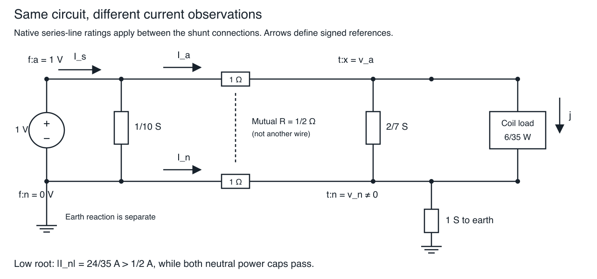

An explicit neutral does not make power limits current limits
Page status: self-checked exact two-conductor SI witness with a local native-package comparison; no general three-phase, dynamic-stability or thermal result.
The scalar multiplicity lesson separates circuit roots from rating admissibility. This example retains a neutral, mutual resistance and explicit shunts. The lower-voltage root still passes both-end power caps while violating the intended neutral-current cap, even though the receiving neutral voltage is nonzero. Claim LIMIT-NEUTRAL-001 records this finite counterexample.

Predict the observations before solving
Use SI quantities throughout. The source fixes phase and neutral voltages at $(E,0)$ with $E=1$ V. The two-conductor series element has the real resistance matrix
\[R=\begin{bmatrix}1&1/2\\1/2&1\end{bmatrix}\;\Omega.\]
Its eigenvalues are $1/2$ and $3/2$ Ω, so it is positive definite. Declare three separate passive shunt elements: source phase-to-neutral conductance $g_f=1/10$ S, receiving phase-to-neutral conductance $g=2/7$ S, and receiving neutral-to-earth conductance $h=1$ S. In the native fixture the latter two are one dense shunt factor with matrix $[[g,-g],[-g,g+h]]$; they are not silently embedded in the native series-line encoding.
The receiving load draws $P=6/35$ W and zero reactive power between phase and neutral. Define receiving voltages $v_a,v_n$ and coil voltage $u=v_a-v_n$. Series currents $I_a,I_n$ point from source to receiver; load-coil current $j$ points from phase to neutral. These signs are reference orientations: the solved neutral current is negative.
Predict. Must $I_s=I_a=j$? Must $I_n=-I_a$? Neither follows here. The explicit shunts carry current, including a finite earth return.
Derive both operating points
Using numerical values in the stated SI units, receiving KCL and the two coupled voltage equations at a real operating point are
\[I_a=j+gu,\qquad I_n=-j-gu+hv_n, \qquad \begin{bmatrix}1-v_a\\-v_n\end{bmatrix} =R\begin{bmatrix}I_a\\I_n\end{bmatrix}.\]
Eliminating the linear return circuit gives
\[v_n=\frac14I_a,\qquad I_n=-\frac34I_a,\qquad u=1-\frac78I_a,\qquad j=I_a-\frac27u.\]
Then $uj=6/35$ reduces to
\[25u^2-20u+3=(5u-1)(5u-3)=0.\]
Thus $u=1/5$ V and $u=3/5$ V exhaust the real roots. The native complex circuit has the same roots: its effective series resistance is $7/8$ Ω, and $S=u\overline{(1-u)/(7/8)-(2/7)u}$ has imaginary part $(8/7)\operatorname{Im}u$. Prescribed zero reactive power therefore forces $\operatorname{Im}u=0$. The remaining linear relations then fix all currents and voltages. This is an equation argument, not a completeness claim from two solver runs.
| Quantity | Lower coil-voltage root | Higher coil-voltage root |
|---|---|---|
| Coil voltage $u$ (V) | 1/5 | 3/5 |
| Phase voltage $v_a$ (V) | 3/7 | 5/7 |
| Neutral voltage $v_n$ (V) | 8/35 | 4/35 |
| Phase series current $I_a$ (A) | 32/35 | 16/35 |
| Neutral series current $I_n$ (A) | −24/35 | −12/35 |
| Coil current $j$ (A) | 6/7 | 2/7 |
| Source phase current $I_s=I_a+g_f E$ (A) | 71/70 | 39/70 |
| Receiving earth outflow $hv_n$ (A) | 8/35 | 4/35 |
The source shunt changes source current but not these roots because the source voltage is fixed. These deliberately small, depressed-voltage values expose the mathematics; this is not a normal service-voltage or calibrated feeder example.
Check the intended conductor rating
Apply series-current caps $[1,1/2]$ A to phase and neutral. Compare them with native per-conductor power caps $[1,1/2]$ VA at both ends. These power caps use each terminal's earth-referenced voltage, not the load-coil voltage.
The lower root has neutral-current magnitude $24/35\approx 0.686$ A and violates the 0.5 A cap by $13/70\approx 0.186$ A at both ends. Its source neutral power is zero, but the receiving neutral power magnitude is nonzero:
\[\lvert v_n I_n\rvert=\frac{192}{1225}\approx0.157\;\mathrm{VA}<0.5\;\mathrm{VA}.\]
Both phase power caps also pass. All current caps pass at the higher root. The roots are unchanged; their admissibility changes with the constraint. Positive neutral voltage does not make a fixed power cap equivalent to a current cap. The relevant relation is still $|S|=|V||I|$ at the particular terminal and conductor being limited.
Aggregate power is a different observation again
For power delivered from the series element to the receiving bus, retain signed conductor powers $v_a I_a$ and $v_n I_n$. At the lower root,
\[S_{a,t}=\frac{96}{245},\qquad S_{n,t}=-\frac{192}{1225},\qquad \left|S_{a,t}+S_{n,t}\right|=\frac{288}{1225}\approx0.235\;\mathrm{VA}.\]
The sum of magnitudes is instead $96/175\approx 0.549$ VA. Neither value is the neutral current. Negative signed neutral power is not negative dissipation: total series dissipation is $\mathbf I^T R\mathbf I>0$. Do not infer conductor temperatures from either this static resistance model or the declared ratings.
For a concrete comparison, an illustrative 1.1 VA aggregate cap passes at both ends of the series element and at the source supply for both roots. That fact does not certify the neutral-current cap. These are postprocessed observations; no aggregate constraint or new native rating field was added to the model. Per-conductor power caps, the magnitude of the sum of complex powers, and the sum of power magnitudes are three different definitions.
Keep the measurement location and missing evidence visible
The source lead, series element and load coil have different currents. At the lower root $I_a<1$ A while $I_s>1$ A. Applying the line's 1 A phase rating to the source current would test a different conductor. A separately rated source lead could legitimately fail; this fixture does not declare that rating.
For a cut that includes the separately declared shunt factors, the source-side current vector is $\mathbf I_{\mathrm{series,from}}+Y_f\mathbf V_f$; the receiving cut is $\mathbf I_{\mathrm{series,to}}+Y_t\mathbf V_t$. Those composite currents need not be negatives of one another. The series endpoint currents are opposites and use their mapped conductor labels. This example does not extend the candidate audit to arbitrary native line-internal pi-shunt encodings.
The source neutral is perfectly grounded, with a separate earth-reaction current. Its injection is $hv_n$; it is not the source's neutral return. Setting that reaction to zero leaves aggregate power unchanged because its voltage is zero, but violates source-neutral KCL. Deleting it from the result instead yields missing evidence: KCL and aggregate power become unassessed. A declared zero current and an absent current are different observations.
Shunt currents in this audit are explicitly reconstructed from the supplied matrix and voltage; there is no independent measured shunt-current comparison. The native tests also remove the receiving earth path from the input, ground the receiving neutral while retaining coil voltage, reverse an endpoint map, and test an exact current-cap boundary. Each mutation exercises a different physical or evidential obligation.
Reproduce and transfer
python3 experiments/lessons/neutral_shunt_multiplicity.py --checkThe dependency-free rational checker binds its fixture and source files into experiments/generated/neutral-shunt-multiplicity.json. It checks both roots, KCL, coupled voltage equations, shunt currents, earth reaction, powers, losses and the rating distinction. It uses exact arithmetic; the native package fixture is checked separately with explicit tolerances.
Using the exact clean local candidate environment described in the repository's experiments/integration/README.md, run:
julia --startup-file=no --project="$MGB_AUDIT_ENV" \
experiments/lessons/verify_neutral_shunt_multiplicity.jl /tmp/neutral-shunt-multiplicity.jsonThe companion binds the package fixture/example, candidate Git revision/tree, book exact witness and environment hashes. Four native attempts isolate the two roots under current or power limits. The lower current-limited interval has no accepted solved point; any returned local-failure iterate remains diagnostic. The exact root-and-rating comparison, rather than the termination label, establishes its infeasibility. Successful native results are checked against both the emitted model and the intended current model. This is independent equation evaluation with a shared schema, not independent scientific review.
Transfer exercise. Tighten only the neutral current cap to $12/35$ A. The high root lies on the boundary and the low root fails. Then remove the receiving earth shunt: may the same numeric roots be reused? No—the return relation and effective resistance change. Retain the original equations and recompute rather than transferring the old table.
The package candidate remains local and unpublished, outside the published integration pin and MCP execution surface. Three-phase generality, equipment heating, dynamic stability, general voltage-bound and generator/transformer coverage remain separate work.